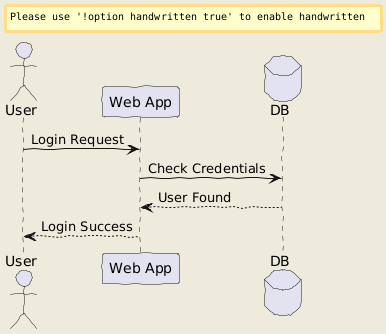

Your diagram will appear here
Describe your architecture in plain English, or pick a template, then hit Generate.
Generating diagram...

Oops! That's a tricky one.
Can you tweak your prompt and hit Generate again? A little more context usually does the trick.